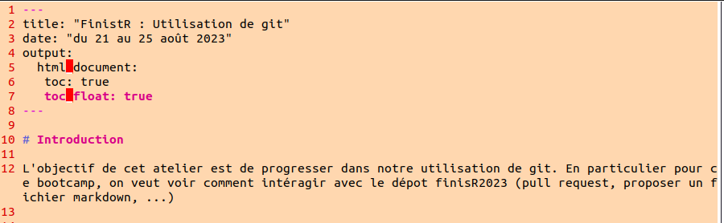
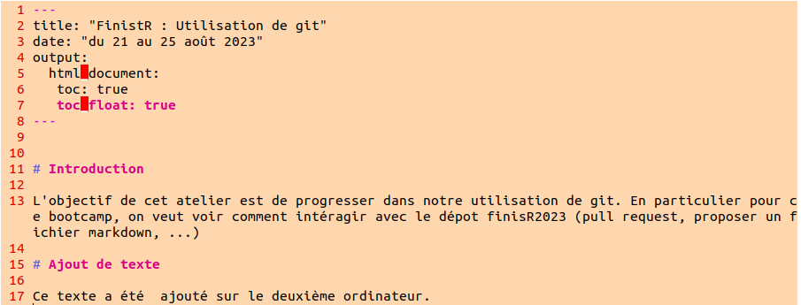
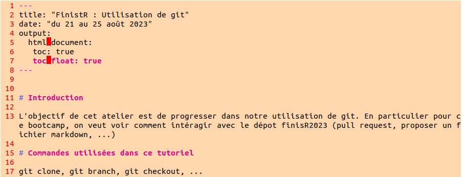
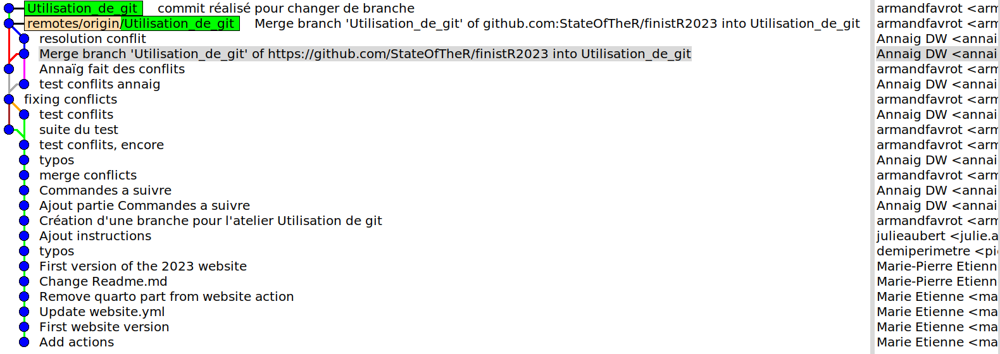

mkdir Utilisation_de_git
cd Utilisation_de_git
nvim Utilisation_de_git.qmdFinistR : Utilisation de git
Introduction
L’objectif de cet atelier était de voir comment intéragir avec le dépôt github finistR2023 afin de pouvoir contribuer à la réalisation de la page web. Nous avons pour cela crée une branche dédiée à cet atelier sur laquelle nous avons interagi avec deux ordinateurs différents. Ce compte rendu consitste en la restitution chronologique des commandes exécutées par ces deux ordinateurs, et détaille les problèmes rencontrés en cours de route.
Chronologie des commandes
Ordinateur 1
On commence par cloner le dépôt github StateOfTheR/finistR2023 :
git clone git@github.com:StateOfTheR/finistR2023.git
On crée une nouvelle branche pour cet atelier git :
git branch Utilisation_de_git
On se déplace sur cette branche :
git checkout Utilisation_de_git
On crée un fichier qmd dans un nouveau dossier dédié à cet atelier :
On commit les modification et on les push dans le dépôt.
git add .
git commit -m "création d'une branche pour l'atelier sur git"
git push --set-upstream origin Utilisation_de_git La partie --set-upstream origin Utilisation_de_git de la troisième commande n’est utile que parce que la branche n’existe pas encore dans le dépôt. Les prochains push se feront simplement avec la commande git push.
A ce stade, le fichier Utilisation_de_git.qmd est comme suit :
 ————————————————————————————————————————————-
Ordinateur 2
Avec le deuxième ordinateur, nous avons cloné le dépôt, nous nous sommes placés sur la branche crée précédemment, nous avons ajouté du texte au fichier qmd sans modifier le texte déjà présent, puis nous avons pushé ces modifications sur le dépôt. Le fichier Utilisation_de_git.qmd était comme suit au moment du push :
 ————————————————————————————————————————————-
Ordinateur 1
En parallèle de cette opération, nous avons aussi fait un ajout de texte avec le premier ordinateur :

Après avoir commité cette ajout de texte, nous avons fait un git pull et nous avons eu un conflit auquel nous ne nous attendions pas étant donné la nature des différences entre le fichier sur le dépôt et le fichier en local. Le message d’erreur était le suivant :
You have divergent branches and need to specify how to reconcile them. You can do so by running one of the following commands sometime before your next pull:
- git config pull.rebase false # merge (the default strategy)
- git config pull.rebase true # rebase
- git config pull.ff only # fast-forward only
You can replace “git config” with “git config –global” to set a default preference for all repositories. You can also pass –rebase, –no-rebase, or –ff-only on the command line to override the configured default per invocation.
Nous pensions pouvoir résoudre ce conflit en fast forward, nous avons donc configuré le pull de cette façon :
git config pull.ff only
Puis nous avons fait un git pull, mais cela n’a pas fonctionné.
Nous avons alors utilisé rebase :
git pull --rebase
Puis nous avons ouvert le fichier qmd pour gérer les conflits en supprimant les “=” et les “>”, après quoi nous avons commité ces modifications. Nous avons alors essayé de faire un push et nous avons eu le message d’erreur suivant :
fatal: You are not currently on a branch. To push the history leading to the current (detached HEAD) state now, use
- git push origin HEAD:<name-of-the-remote-branch>
Effectivement, la commande git branch nous donnait le résultat suivant :
*(no branch, rebasing Utilisation_de_git)
Utilisation_de_git
main
Nous avons résolu le problème avec
git rebase --continue
Et le push a ensuite bien fonctionné. ————————————————————————————————————————————-
A ce stade, nous nous sommes dits que nous avions mal géré le problème et que nous aurions dû utiliser la stratégie par défaut proposée dans le premier message d’erreur. Dans la suite, nous avons donc reconfiguré le pull (git config pull.rebase false) et nous avons recommencé ces ajouts de textes en parallèle avec les deux ordinateurs pour voir si c’était la bonne solution. Mais malgré cette reconfiguration du pull, git tentait toujours de le faire en fast forward. Cela venait de la commande git config pull.ff only exécutée précédemment et nous nous en sommes rendu compte en utilisant la commande git config -l qui permet de voir la configuration de certaines commandes git. Nous avons donc reconfiguré pull.ff :
git config pull.ff false
Et le merge des deux fichiers a bien fonctionné.
Au cours de ce travail, nous avons utilisé l’application gitk (installée avec sudo apt install gitk) qui permet de visualiser l’arbre des commits d’un répertoire git. Cette application s’utilise simplement en exécutant la commande gitk depuis le répertoire git désiré. Des options sont disponible pour customiser la vue et en particulier pour filtrer certaines branches de l’arbre (aller dans View > New view). La figure ci-dessous représente l’arbre de notre branche à la fin des différents tests que l’on a effectués.

Par ailleurs, un point important à mentionner est le recours à la commande history de bash pour accéder à l’historique de ce dernier (aussi accessible dans le fichier ~/.bash_history (pour les linuxiens)). En effet, cela nous a permis de retracer ce qui s’était passé et de mieux comprendre certaines choses. Nous avons cependant regrété que les log des commandes git ne soient pas automatiquement sauvegardés. Cela nous aurait beaucoup aidé.
Commandes utiles
Commandes précédées de git
- clone : clone un dépôt distant (de gitHub par exemple) dans un nouveau répertoire local.
- branch
- branch : affiche les noms des branches sur lesquelles on a travaillé, celle avec une étoile correspond à celle sur laquelle on est.
- branch -a : affiche les noms de toutes les branches.
- branch new_branch_name : créer une nouvelle branche.
- checkout
- checkout branch_name : se déplacer sur une branche.
- checkout -b new_branch_name : créer une nouvelle branche et se déplacer sur cette nouvelle branche.
- status : affiche des informations sur la situation de notre git (la branche sur laquelle on est, les commits en cours,…)
- add : Instruction à réaliser avant un commit, pour indiquer à git quels fichiers on veut suivre. Si on ne précise pas les noms des fichiers, par défaut tous les fichiers du répertoire sont ajoutés au suivi (sauf ceux du .gitignore).
- commit -m commit_message : “commit” les changements réalisés dans les fichiers suivis (ceux qu’on a indiqué avec l’instruction add). On conseille de mettre un message explicite, c’est utile lorsqu’on souhaite revenir à une version précedente.
- push : envoi des modifications des fichiers commités sur le dépot distant.
- pull
par défaut équivalent à git fetch suivi de git merge : télécharge la branche distante (fetch) et la merge à la branche locale- pull : incorpore les modifications du dépot distant dans le répertoire local.
- pull –rebase : pull en faisant un rebase
- pull –merge : pull en faisant un merge
- pull : incorpore les modifications du dépot distant dans le répertoire local.
- config
config permet de customiser la configuration des dossiers git, il y a une configuration locale (le dossier git courrant) et une configuration globale (valable pour tous les dossiers git)- config -l : affiche les configurations de notre git pour le dossier courrant.
- config pull.rebase true : indique a git de faire un rebase par défaut au moment du pull, pour le dossier git courrant.
- config –global pull.rebase true : même chose mais pour tous les dossiers gits.
- rebase –continue : continue un rebase avorté par un échec de merge, après l’édition des fichiers conflictuels
- log
- log : affiche l’historique des commits de la branche sur laquelle on se trouve.
- log –oneline : idem mais avec un affichage plus concis, sur une seule ligne.
Perspectives
Au cours de cet atelier, nous avons pu voir l’intérêt de git pour un projet collaboratif comme celui de la réalisation d’un site web. Néanmoins, n’étant pour la plupart d’entre nous que des utilisateurs novices de git dont l’utilisation se résume parfois à celle d’un simple drive, nous nous sommes demandés quels bénéfices nous pouvions en tirer pour une utilisation solitaire. En particulier pour en finir avec les répertoires remplis de fichiers comme analyse.ipynb, analyse_V2.ipynb, …, analyse_Vn.ipynb, dont l’un des intérêts est que cela permet de travailler simultanément sur plusieurs fichiers à la fois.
Une solution basée sur la création de différentes branches et des commandes git stash et git popa émergé au moment de la restitution et sera testée prochainement.
Liens utiles
Remerciements
Un grand merci à Marie-Pierre sans qui cet atelier aurait pû durer très longtemps !